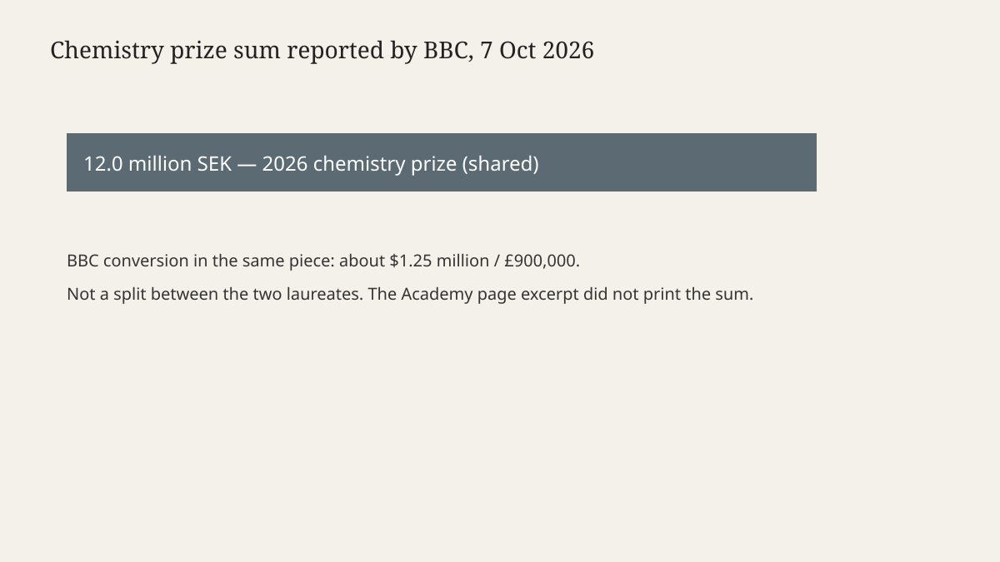

Stockholm · science · 7 October 2026
Henri Kagan and Kenso Soai won the chemistry Nobel for mirror-image reactions.

What is agreed across desks
On Wednesday 7 October 2026 the Royal Swedish Academy of Sciences awarded the Nobel Prize in Chemistry to Henri B. Kagan of Université Paris-Sud and Kenso Soai of Tokyo University of Science. The citation, printed on the Academy’s press page, is “for the discovery of non-linear effects and autocatalysis in asymmetric organic synthesis.” Reuters, the BBC and the press release name the same two people, the same institutions and the same citation. That match is the decision. It is not a prediction about next year’s prize.
Reuters described Kagan as 95 and French, and Soai as 76 and Japanese. The BBC’s science desk used the same nationalities and the same problem statement: living systems use one mirror form of certain molecules, not both. The prize follows Monday’s medicine announcement and Tuesday’s physics prize to Francis Halzen for IceCube. Those are separate citations. Chemistry is not a continuation of the neutrino result.
The BBC wrote that the winners share 12.0 million Swedish kronor, which it converted as about $1.25 million or £900,000. The press-release excerpt used here does not print the sum. Where the figure appears below, it is the BBC’s line, not an Academy sentence copied from the page that was opened.
What the citation is about
Some molecules exist as two forms that are mirror images, the way a left hand and a right hand are mirrors and cannot be stacked. Chemists call that chirality. Amino acids, the building blocks of proteins, have that property. The Academy’s text says living organisms contain only one of those mirror images. The other is rarely found in nature. The field’s name for that one-sidedness is homochirality, from Greek words the press release glosses as “same” and “hand.”
The practical stake is not a metaphor. A left-handed drug molecule and its right-handed mirror can act differently in a body. Peter Somfai, a member of the Nobel Committee for Chemistry, told Reuters that chemists need methods for selectively preparing one form. The Academy says the laureates’ work has been decisive for people who design reactions used to manufacture pharmaceuticals. That is a claim about usefulness in a class of reactions, not a claim that a named drug on a pharmacy shelf was invented on Wednesday.
The press release dates the steps. Kagan, it says, took a first decisive step in 1986, finding a way to push a reaction toward a greater excess of one mirror image than had been thought possible. Soai’s key publication is dated 1995: a reaction designed with the potential to become homochiral. The same page says he succeeded in 2003, presenting a reaction in which only one of the two possible mirror images formed. Heiner Linke, chair of the chemistry committee, called the reactions spectacular and said the pair had addressed a mystery more than a century old: how homochirality can emerge spontaneously.
Reuters places the older root with Louis Pasteur in the nineteenth century. Pasteur separated mirror forms of a crystal by hand. The 2026 citation is not an award to Pasteur. It is an award for later reaction methods that can favour one form without that kind of sorting. A reader who wants the mechanism in laboratory detail should use the Academy’s popular summary and the 1986 and 1995 papers, not a news lead.
What is only a quote
Soai told the Nobel press conference by telephone, in Reuters’s rendering, “This is the most exciting day in my life, I am very glad to share this prize with professor Henri Kagan.” He said he had been out shopping when the call came. Those are biographical sentences from a phone call. They do not change the citation, the years, or the prize sum. A shopping trip is not evidence about the 2003 reaction.
Linke’s “spectacular” is an evaluative word from the committee chair. It is not an independent replication published on Wednesday. Somfai’s remark about left- and right-handed drugs is a committee member explaining why the methods matter. It is not a regulatory finding about a specific medicine.
What the story is not
It is not a finding that life’s chemistry was “solved” in a single experiment this week. The dated steps are 1986, 1995 and 2003. The 2026 act is the award. It is not a claim that every chiral drug is now trivial to make, or that one mirror form is always the safe one and the other always harmful. Thalidomide is the textbook case people reach for; these pieces do not re-try that history, and this article will not invent a dose or a victim count from memory.
It is also not a ranking of Kagan against Soai. The Academy awarded them jointly for related discoveries. Reuters notes that chemistry followed medicine and physics this week. Tuesday’s dossier covered Halzen. This page does not reopen IceCube.

How to read the next sentence
A later profile may add laboratory photographs, a patent list, or a dispute about priority. Until that document is the source, the checkable core is the citation, the two affiliations, the years the Academy assigns to the steps, and the prize sum as the BBC stated it. Phone-call colour stays in the quote section.
Source articles and scores
| Outlet | Headline | T | N | C |
|---|---|---|---|---|
| Nobel Prize | Press release: Nobel Prize in Chemistry 2026 | 98 | 0 | 100 |
| Reuters | Nobel chemistry prize goes to pair who solved mystery of 'mirror image' molecules | 95 | 0 | 98 |
| BBC | Chemistry Nobel awarded for solving mystery of life's asymmetry | 93 | 0 | 96 |
| Al Jazeera | Henri Kagan, Kenso Soai win chemistry Nobel for ‘mirror image’ breakthrough | 90 | 0 | 94 |